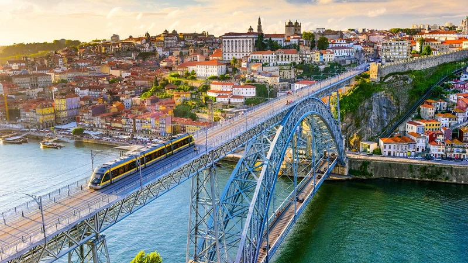

Turismo na cidade do Porto
Porto
O Porto é um dos principais destinos turísticos de Portugal, conhecido pelo seu centro histórico classificado como Património Mundial, pelas margens do Rio Douro, pelas caves de vinho do Porto em Vila Nova de Gaia e por monumentos emblemáticos como a Ponte de Dom Luís I, a Torre dos Clérigos e a Livraria Lello. A cidade combina património histórico, arquitetura, gastronomia tradicional — com destaque para a Francesinha — e uma atmosfera vibrante, oferecendo passeios à beira-rio, cruzeiros no Douro, museus, mercados e uma intensa vida cultural ao longo de todo o ano.
